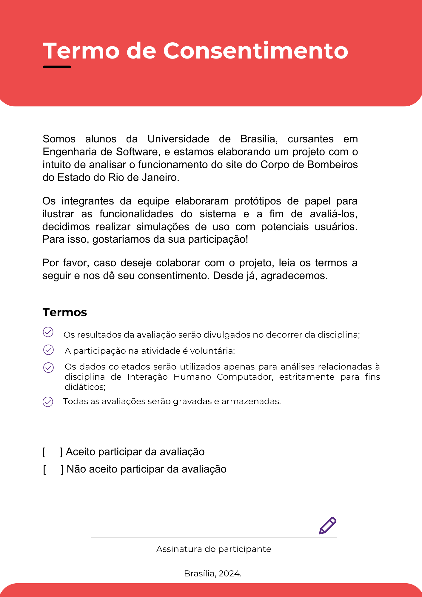

Planejamento da avaliação do protótipo de alta fidelidade
Introdução
Nessa parte do projeto trataremos do planejamento para a execução de um protótipo de alta fidelidade. Para isso, separamos objetivos - demonstrarão qual o nosso propósito ao executar os protótipos de alta fidelidade -, uma medolologia - responsável por nos fazer seguir todo um rigor técnico de execução da avaliação, diminuindo os erros -, e o teste piloto - será uma forma de testar a aplicação da metodologia, e nos preparar para as etapas de execução das avaliações.
Metodologia
A metodologia a ser utilizada para planejar a avaliação do protótipo de alta fidelidade tera como base o framework DECIDE. Este consiste em um acrônimo no qual cada letra significa uma ação que deverá ser feita de modo iterativo. Segue abaixo o que cada um significa (2):
| Letra | Definição |
|---|---|
| D | Determinar os objetivos |
| E | Explorar quais perguntas colocar para o entrevistado responder |
| C | Escolher os métodos de avaliação a serem utilizados |
| I | Identificar questões práticas para se preparar corretamente quando se fazer a avaliação |
| D | Decidir sobre qual modo tratar das questões éticas |
| E | Avaliar, interpretar os dados e apresentar os dados |
D - Determinar Objetivos
Os objetivos são importante para nortear o planejamento do projeto. Sendo assim, com a intenção de escolher os objetivos que mais se adequam com o projeto, selecionamos os seguintes (1): - a apropriação com a tecnologia por parte dos usuários - conformidade com o padrão - problemas interativos na interface
Justificativa de escolha dos objetivos: Esses objetivos foram escolhidos com o intuito de analisar se nossa proposta está adequada com o perfil do usuário e o guia de estilo. Em relação à apropriação da tecnologia, este perfil de usuário sugere que o usuário alvo tem facilidade com a tecnologia, logo é preciso desenvolver um sistema de acordo com este requisito. Sobre a conformidade com o padrão, é essencial que sigamos corretamento o guia de estilo, a fim de não distoar com o padrão que já existe no site CBMERJ. Por fim, sobre os problemas interativos na interface, é essencial que nessa etapa identifiquemos todos os possíveis problemas interativos, antes que seja executado o o produto final.
E - Explorar Perguntas
Diante do objetivo principal da avaliação de coleta de informações relevantes através de um usuário em potencial, foram selecionadas e preparadas perguntas visando, para checagem e melhoria geral da funcionalidade, a verificação de conformidade da interface e o modo como é operada, e o comportamento do usuário, assim como suas sugestões, para comparação de ideias de design. Foram preparadas perguntas para a entrevista, de acordo com o Captítulo 11 da literatura de Barbosa e Silva (2011, p.266). São elas:
- Você conseguiu operar o sistema com tranquilidade e sem erros?
- Houve algum momento em que você se sentiu perdido ou confuso?
- O sistema permitiu que você completasse sua tarefa de forma eficiente?
- Você atingiu seu objetivo? A funcionalidade apresenta de forma clara o objetivo esperado?
- O design do protótipo manteve seu interesse durante a interação? Ele é agradável e apropriado para a tarefa?
- Qual foi sua impressão sobre o protótipo? O que você mudaria ou melhoraria?
- Você recomendaria o uso deste sistema a outras pessoas? Por quê?
C - Escolher método de avaliação
Optamos pelo método de teste de usabilidade com protótipo de alta fidelidade, complementado por entrevistas. Os participantes iniciam com o questionário pré-teste, seguido pela interação com o protótipo, onde observamos seu uso para avaliar a usabilidade. Após o teste, eles preenchem o questionário pós-teste para avaliar a eficiência e usabilidade percebida. As entrevistas serão gravadas e documentadas para garantir consistência no tratamento dos dados.
I - Identificar quesitos práticos da avaliação
Recrutamento
Os participantes devem ser recrutados de acordo com o Perfil do Usuário. Cada fucionalidade deve ser avaliada por no mínimo três participantes, seguindo a técnica de Krug, com três ou quatro participantes, a maioria dos problemas é detectada, tornando possível fazer a análise no mesmo dia. (6)
Mão-de-obra necessária
Em uma única sessão as seis funcionalidades serão avaliadas. O grupo irá se dividir em três duplas, cada dupla acompanhará um participante durante a avaliação de duas funcionalidades. Dessa forma, alternaremos até que todas as avaliações sejam concluídas.
Dessa forma, cada avaliação deve envolver pelo menos dois avaliadores:
- Responsável por conduzir a avaliação, guiando o participante;
- Responsável por observar o participante durante a sessão, fazendo anotações sobre sua interação e responsável pela entrevista ao final da simulação no protótipo. (5)
Custos
Os custos incluem o valor das impressões dos termos de consentimento.
Materiais
Os materiais a serem utilizados incluem:
- Celular e/ou um notebook: Serão utilizados para gravação de videos e para auxiliar os avaliadores durante a avaliação;
- Papel e caneta: Serão utilizados pelos avaliadores para realizarem anotações.
Preparação
Material impresso
- Termo de consentimento livre e esclarecido (TCLE), de acordo com os cuidados éticos necessários.
Ambiente, hardware e software
- Todas as instalações, configurações e demais procedimentos de preparação para a sessão de avaliação devem ser concluídos antes de receber cada participante;
- Devemos configurar testar câmeras de vídeo e a gravação de audios;
- O laboratório deve estar limpo e arrumado para receber os participantes. (3)
Roteiro de avaliação
A seguir, é apresentada a sequência de passos que devem ser abordados durante a avaliação:
- Apresentação dos termos de consentimento;
- Breve explicação dos objetivos da avaliação e da funcionalidade que será avaliada para contextualização do participante;
- Esclarecer para o participante como a avaliação será conduzida e responder a quaisquer dúvidas.
- Entrevista pré-simulação para uma coleta rápida dos dados do participante.
- Simulação da funcionalidade no protótipo de alta fidelidade.
- Entrevista pós-simulação.
Se o avaliador julgar necessário uma compreensão mais detalhada da experiência, ele pode solicitar que o participante utilize a técnica do think aloud.
Prazos
Na Tabela 2, apresentamos o cronograma planejado para a avaliação de cada uma das seis funcionalidades.
| Avaliadores | Participantes | Horário do Início | Horário do Fim | Data | Tarefas | Local |
|---|---|---|---|---|---|---|
| Bruna e Genilson | Augusto Duarte, Gustavo Alves e Larissa Stéfane | 08:30 | 09:30 | 02/07/24 | 1. Solicitar ficha de atendimento 2. Checar e gerar certificado |
FGA |
| Daniela e Mariana | Augusto Duarte, Gustavo Alves e Larissa Stéfane | 08:30 | 09:30 | 02/07/24 | 1. Agendamento de atendimento presencial 2. Obter declaração do degistro de ocorrência |
FGA |
| Lucas e Pedro | Augusto Duarte, Gustavo Alves e Larissa Stéfane | 08:30 | 09:30 | 02/07/24 | 1. Curso: Primeiro socorros 2. Curso: Acidentes domiciliares |
FGA |
Tabela 1: Cronograma de avaliação do protótipo de alta fidelidade.
Fonte: Bruna Lima, 2024
D - Decidir questões éticas
De acordo com os princípios éticos e de integridade, o termo de consentimento da Figura 1 deve ser apresentado ao participante antes do início da avaliação. Este documento explica comos os dados coletados serão utilizados, sua assinatura é completamente voluntária e indicará o consentimento informado do participante para participar ou não da avaliação.

Figura 1 - Termo de Consentimento (Fonte: Daniela Alarcão, 2024).
E - Avaliar, interpretar e apresentar dados
Após a conclusão da avaliação, os dados coletados serão documentados e analisados, levando em consideração o contexto em que foram obtidos. Será verificado se esses dados possuem um alto grau de confiabilidade e se podem ser generalizados para representar a base de usuários do site.
Durante o processo, será essencial registrar os problemas encontrados e as dificuldades enfrentadas durante a interação, que podem incluir questões de usabilidade, falta de funcionalidades, bem como decorrentes problemas de desempenho. As descrições detalhadas dos problemas serão registradas, juntamente com suas classificações, sugestões de melhorias e o feedback dos usuários. Além disso, observações gerais sobre a entrevista serão documentadas.
Após essa etapa, os dados processados serão apresentados à equipe de desenvolvimento, com o objetivo de extrair o máximo de informações relevantes para o aprimoramento do projeto. Isso garantirá que todas as descobertas sejam utilizadas para melhorar o sistema e atender melhor às necessidades dos usuários.
Teste Piloto
Serão realizados seis testes pilotos, um para cada funcionalidade, com o objetivo de validar e otimizar o planejamento da simulação com o protótipo de alta fidelidade antes de sua execução oficial. No teste piloto de cada funcionalidade, um outro integrante do grupo fará o papel do participante.
Após a execução do teste piloto, se qualquer problema for identificado, iremos revisar o planejamento. Essa revisão é importante para garantir que os ajustes necessários sejam feitos e que a avaliação principal ocorra da forma esperada.
Este teste piloto não influenciará a coleta nem a interpretação dos dados. O cronograma planejado para realização do teste é apresentado na tabela 2.
| Teste Piloto | Avaliador(s) | Participants(s) | Horário | Data | Tarefa(s) | Local |
|---|---|---|---|---|---|---|
| 1 | Mariana | Genilson | 15:00 | 01/07/24 | Obter Declaração do Registro de Ocorrência | FGA |
| 2 | Daniela | Genilson | 14:00 | 01/07/24 | Agendar Atendimento Presencial | FGA |
| 3 | Genilson | Mariana | 14:30 | 01/07/24 | Checar e Gerar Certificado | FGA |
| 4 | Bruna | Mariana | 10:00 | 02/07/24 | Solicitar Ficha de Atendimento | FGA |
| 5 | Lucas e Pedro | Bruna | 10:10 | 02/07/24 | Cursos: Acidentes Domiciliares e Primeiros Socrros | FGA |
Tabela 2: Cronograma do teste piloto.
Fonte: Bruna Lima, 2024
Teste Piloto 1: Obter Declaração do Registro de Ocorrência - Mariana
Video 1: Teste Piloto Obter Declaração do Registro de Ocorrência.
Fonte: Mariana Letícia, 2024.
Teste Piloto 2: Agendar Atendimento Presencial - Daniela
Video 2: Teste Piloto de Agendar Atendimento Presencial.
Fonte: Daniela Alarcão, 2024.
Teste Piloto 3: Checar e Gerar Certificado - Genilson
Video 3: Teste Piloto de Checar e Gerar Certificado.
Fonte: Genlson Silva, 2024.
Teste Piloto 4: Solicitar Ficha de Atendimento - Bruna Lima
Video 4: Teste Piloto de Solicitar Ficha de Atendimento.
Fonte: Bruna Lima, 2024.
Teste Piloto 5 e 6: Cursos: Acidentes Domiciliares e Primeiros Socorros - Lucas e Pedro
Video 5: Teste Piloto dos Cursos: Acidementes Domiciliares e Primeiro Socorros
Fonte: Pedro Henrique e Lucas Avelar, 2024.
Bibliografia
- Barbosa, S. D. J.; Silva, B. S. da; Silveira, M. S.; Gasparini, I.; Darin, T.; Barbosa, G. D. J. Interação Humano-Computador e Experiência do usuário. (2021). Acesso em: 03 de junho de 2024.
Referências Bibliográficas
- Barbosa, S. D. J.; Silva, B. S. da; Silveira, M. S.; Gasparini, I.; Darin, T.; Barbosa, G. D. J. Interação Humano-Computador e Experiência do usuário. [Capítulo 11, p. 264, 266]
- Barbosa, S. D. J.; Silva, B. S. da; Silveira, M. S.; Gasparini, I.; Darin, T.; Barbosa, G. D. J. Interação Humano-Computador e Experiência do usuário. [Capítulo 11, p. 280]
- Barbosa, S. D. J.; Silva, B. S. da; Silveira, M. S.; Gasparini, I.; Darin, T.; Barbosa, G. D. J. Interação Humano-Computador e Experiência do usuário. [Capítulo 11.7.2, p. 276]
- Barbosa, S. D. J.; Silva, B. S. da; Silveira, M. S.; Gasparini, I.; Darin, T.; Barbosa, G. D. J. Interação Humano-Computador e Experiência do usuário. [Capítulo 11.7.3, p. 277]
- Barbosa, S. D. J.; Silva, B. S. da; Silveira, M. S.; Gasparini, I.; Darin, T.; Barbosa, G. D. J. Interação Humano-Computador e Experiência do usuário. [Capítulo 11.7.3, p. 274]
- Avaliação E Projeto No Design De Interfaces - Autor: José Guilherme Santa Rosa - Ano: Capa comum – 1 janeiro 2010. [Capítulo 9, p. 144]
Histórico de Versões
| Versão | Data | Descrição | Autor(es) | Revisor(es) |
|---|---|---|---|---|
1.0 |
13/06/2024 | Criação da página | Bruna Lima | Mariana Letícia |
2.0 |
13/06/2024 | Adição de introdução, metodologia, e dos objetivos do planejamento | Mariana Letícia | Genilson Silva |
3.0 |
13/06/2024 | Adição da questões práticas e aspectos éticos | Bruna Lima | Pedro Henrique |
3.1 |
18/06/2024 | Adição da seleção de participantes e cronograma | Bruna Lima | Pedro Henrique |
3.2 |
03/07/2024 | Atualização do cronograma e preparação | Bruna Lima | Mariana Letícia |
4.0 |
03/07/2024 | Adição do Teste Piloto | Daniela Alarcão | Mariana Letícia |
5.0 |
03/07/2024 | Adição do Teste Piloto Cursos | Pedro Henrique e Lucas Avelar | Mariana Letícia |
6.0 |
07/07/2024 | Adição do Teste Piloto de Checar e Gerar Certificados e Ajustes no Documento | Genilson Silva | Mariana Letícia |